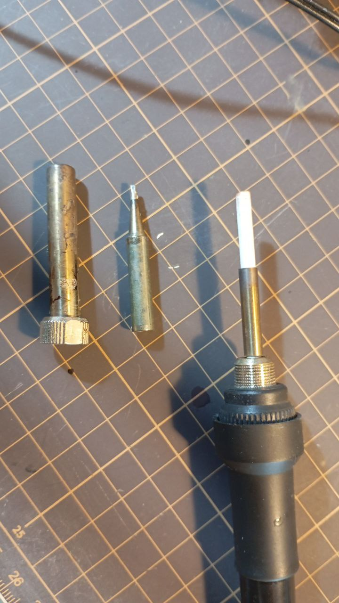

2026-02-28
13:22
TIL
У моего паяльника диаметр нагревателя 3.9мм Внутренний диаметр жала ~4мм Внешний диаметр жала 6.5мм
И я был почему-то уверен, что все, что продается под маркировкой 900М-Т - это оно и есть.
Но там продают и внутренний диаметр 4.5мм и 3.86мм и, возможно, что-то ещё.
И хорошо ещё, если укажут в описании.
Те у кого профессиональные станции, видимо, просто покупают жала от производителя за много денег. Остальные страдают.
🙄
